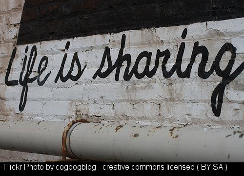

flickr cc attribution helper
Makes attributing flickr creative commons photos a simple cut and paste operation (more...)
Flavors of Tools
The kind of attribution tools available as options from the bookmarklet maker.
Basic HTML
Suitable for any web page that can take raw HTML-- caption below image with linked attribution.
Attribution w/ Image (HTML)

Life is Sharing flickr photo by cogdogblog shared under a Creative Commons (BY) license
<a title="Life is Sharing" href="https://flickr.com/photos/cogdog/8188824613"><img src="https://live.staticflickr.com/8490/8188824613_037d664dc0_z.jpg" /></a><br /><small><a title="Life is Sharing" href="https://flickr.com/photos/cogdog/8188824613">Life is Sharing</a> flickr photo by <a href="https://flickr.com/people/cogdog">cogdogblog</a> shared under a <a href="https://creativecommons.org/licenses/by/2.0/">Creative Commons (BY) license</a> </small>
Attribution only (HTML)
Life is Sharing flickr photo by cogdogblog shared under a Creative Commons (BY) license
<small><a title="Life is Sharing" href="https://flickr.com/photos/cogdog/8188824613">Life is Sharing</a> flickr photo by <a href="https://flickr.com/people/cogdog">cogdogblog</a> shared under a <a href="https://creativecommons.org/licenses/by/2.0/">Creative Commons (BY) license</a>
Attribution text only
"Life is Sharing" flickr photo by cogdogblog https://flickr.com/photos/cogdog/8188824613 shared under a Creative Commons (BY) license
"Life is Sharing" flickr photo by cogdogblog https://flickr.com/photos/cogdog/8188824613 shared under a Creative Commons (BY) license
Wordpress 5+ Block Attributor (aka Gutenberg)
As of WordPress version 5.3 the cut and paste code wrapped in [caption] ... [/caption] shortcodes no longer works. This new attribution format will create the code to insert into a block the flickr image using WordPress native support for flickr automatic embeds (thus sizing automatically to fit the current theme) and add a second paragraph block for the attribution.
Attribution w/image (WordPress Block Editor)

<figure class="wp-block-embed-flickr aligncenter wp-block-embed is-type-photo is-provider-flickr"><div class="wp-block-embed__wrapper"> https://flickr.com/photos/cogdog/8188824613 </div></figure> <p><a href="https://flickr.com/photos/cogdog/8188824613">Life is Sharing</a> flickr photo by <a href="https://flickr.com/people/cogdog">cogdogblog</a> shared under a <a href="https://creativecommons.org/licenses/by/2.0/">Creative Commons (BY) license</a></p>
Attribution only (linked)
Life is Sharing flickr photo by cogdogblog shared under a Creative Commons (BY) license
<<a title="Life is Sharing" href="https://flickr.com/photos/cogdog/8188824613">Life is Sharing</a> flickr photo by <a href="https://flickr.com/people/cogdog">cogdogblog</a> shared under a <a href="https://creativecommons.org/licenses/by/2.0/">Creative Commons (BY) license</a>
Attribution text only
"Life is Sharing" flickr photo by cogdogblog https://flickr.com/photos/cogdog/8188824613 shared under a Creative Commons (BY) license
"Life is Sharing" flickr photo by cogdogblog https://flickr.com/photos/cogdog/8188824613 shared under a Creative Commons (BY) license
WordPress Attributor (Classic Editor with caption codes)
This attributor creates HTML wrapped in [caption] ... [/caption] shortcodes for use in WordPress Classic editor to insert images with captions that will include the full attribution.
Attribution w/ Image (HTML)
Life is Sharing flickr photo by cogdogblog shared under a Creative Commons (BY) license
[caption width="640" align="aligncenter"] <a title="Life is Sharing" href="https://flickr.com/photos/cogdog/8188824613"> <img src="https://live.staticflickr.com/8490/8188824613_037d664dc0_z.jpg" width="640" alt="Life is Sharing" /></a><br /><small><a title="Life is Sharing" href="https://flickr.com/photos/cogdog/8188824613">Life is Sharing</a> flickr photo by <a href="https://flickr.com/people/cogdog">cogdogblog</a> shared under a <a href="https://creativecommons.org/licenses/by/2.0/"> Creative Commons (BY) license</a><small>[/caption]
Attribution only (HTML)
"Life is Sharing" by cogdogblog is licensed under CC BY
<a title="Life is Sharing" href="https://flickr.com/photos/cogdog/8188824613">Life is Sharing</a> flickr photo by <a href="https://flickr.com/people/cogdog">cogdogblog</a> shared under a <a href="https://creativecommons.org/licenses/by/2.0/">Creative Commons (BY) license</a>
Attribution text only
"Life is Sharing" by cogdogblog https://flickr.com/photos/cogdog/8188824613 is licensed under CC BY
"Life is Sharing" flickr photo by cogdogblog https://flickr.com/photos/cogdog/8188824613 shared under a Creative Commons (BY) license
Medium.com
The attributor generates a large sized image that can be copied via right/command click and pasted into the medium.com editor. Then the caption can be selected, copied, and pasted into the caption (learn more on medium.com or better, at cogdogblog...)

"Life is Sharing" by cogdogblog is licensed under CC BY
Stamped in Image
This tool generates a downloadable image with the attribution added directly to the image, using the Stamper tool by John Johnston (learn more at cogdogblog).
Markdown
Suitable for static blog generators, Github, and other popular Markdown-friendly tools, this attributor was made by Glen Smith and then folded into the main tool (learn more on my blog).
Attribution w/ Image (HTML)
[](https://flickr.com/photos/cogdog/8188824613 "Life is Sharing") [Life is Sharing](https://flickr.com/photos/cogdog/8188824613 "Life is Sharing") flickr photo by [cogdogblog](https://flickr.com/people/cogdog) shared under a [Creative Commons (BY) license](https://creativecommons.org/licenses/by/2.0/)
Attribution only (HTML)
[Life is Sharing](https://flickr.com/photos/cogdog/8188824613 "Life is Sharing") flickr photo by [cogdogblog](https://flickr.com/people/cogdog) shared under a [Creative Commons (BY) license](https://creativecommons.org/licenses/by/2.0/)
Attribution text only
"Life is Sharing" flickr photo by cogdogblog https://flickr.com/photos/cogdog/8188824613 shared under a Creative Commons (BY) license